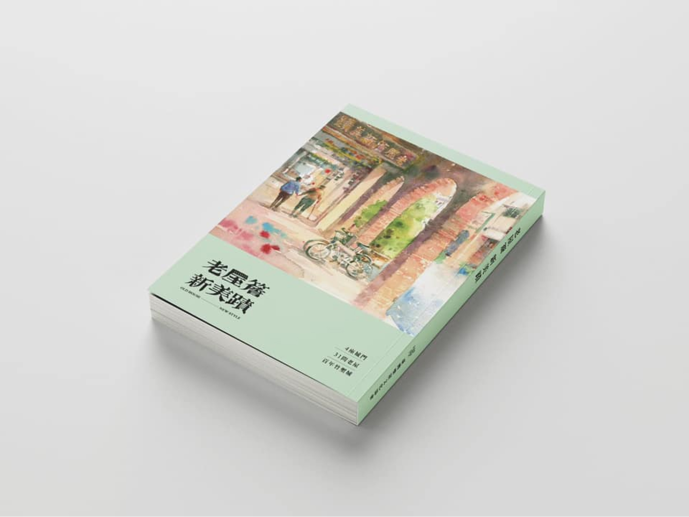
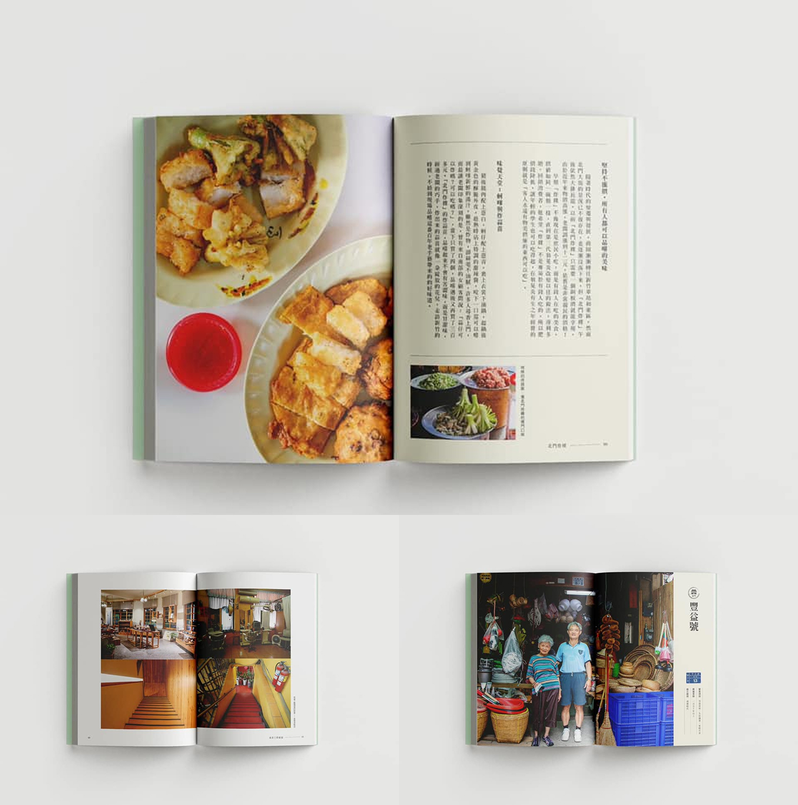

PROJECTS
老屋簷新美積 | 採訪、攝影、撰寫

新竹老屋專刊從訪談中記錄與拍攝，探索各行業老闆的創業歷程、老屋整修過程、選址理由、品牌定位及產品特色等。，舊時代的建築工法加入了新生代的想法，在深厚的文化底蘊中滋養出創新的花朵，老屋本該隨著歷史洪流消逝，因新生代的投入而改變，地方邊陲從此創生，新舊之間的碰撞、磨合進而相容。

用三百年堆砌的竹塹城，其中的老屋有多少？在新竹，具人文風采的老屋遍布，可能是每天路過的一間咖啡廳，也可能是巷弄裡一家剉冰店。近年逐步推行活化計畫，或修築老屋或引進年輕團隊入駐，有老屋翻新有老記憶的延續，這些都值得被記錄成冊。收錄新竹 31 個店家以專刊形式出版，記錄老屋綿長的舊記憶，也記錄老屋活化的新創意，並透過這份紀錄的留傳，讓大家重遊新竹舊城。